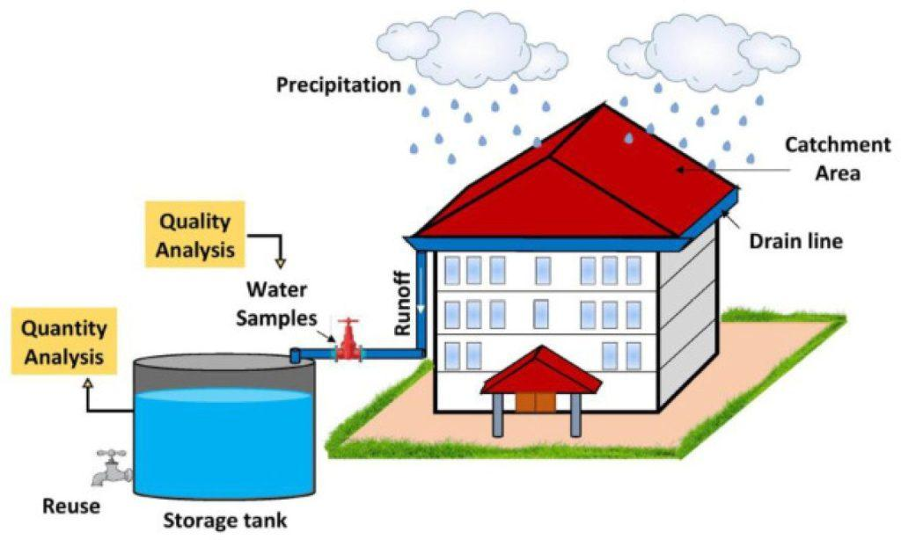

The Importance of Saving Water
Water is a precious resource, yet it is often taken for granted. Conserving water helps to preserve the environment, save energy, and ensure future generations have access to clean water. Simple actions like fixing leaks, taking shorter showers, and choosing water-efficient appliances can make a significant difference.
Engaging in water conservation helps combat water scarcity and protect our planet's ecosystems. By being mindful of our water use, we can contribute to a more sustainable and environmentally friendly world.